{kind=link}

Fit to index data for MOR1. Lines indicate 95% uncertainty interval around index values. Thicker lines (if present) indicate input uncertainty before addition of estimated additional uncertainty parameter.
file: index2_cpuefit_MOR1.png
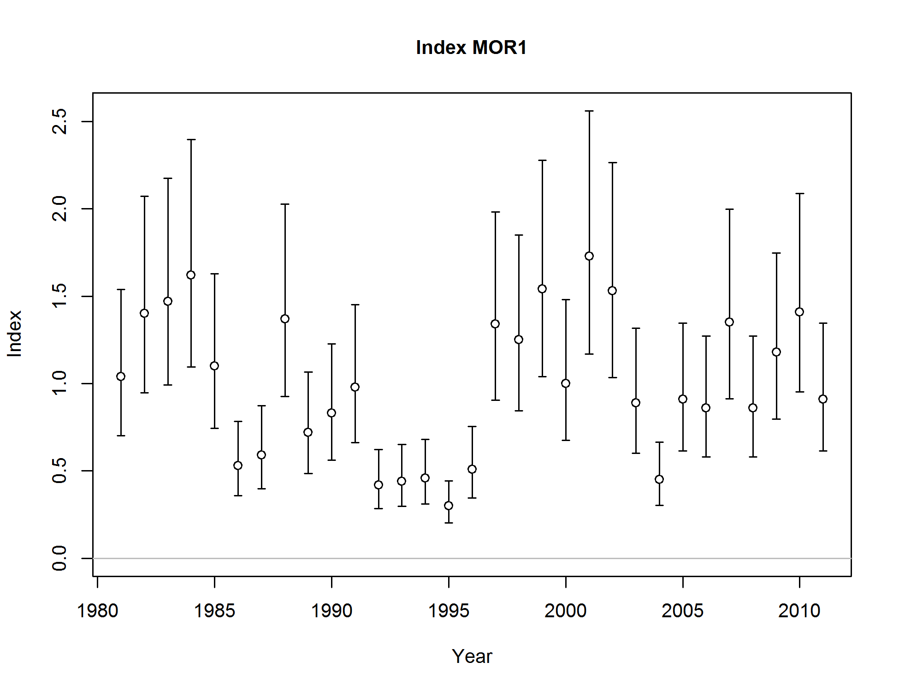
Index data for MOR1. Lines indicate 95% uncertainty interval around index values. Thicker lines (if present) indicate input uncertainty before addition of estimated additional uncertainty parameter.
file: index1_cpuedata_MOR1.png
Fit to index data for MOR1. Lines indicate 95% uncertainty interval around index values. Thicker lines (if present) indicate input uncertainty before addition of estimated additional uncertainty parameter.
file: index2_cpuefit_MOR1.png
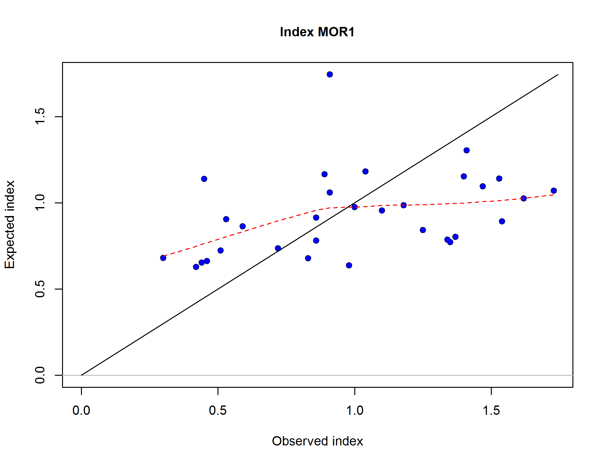
Observed vs. expected index values with smoother for MOR1
file: index3_cpuecheck_MOR1.png
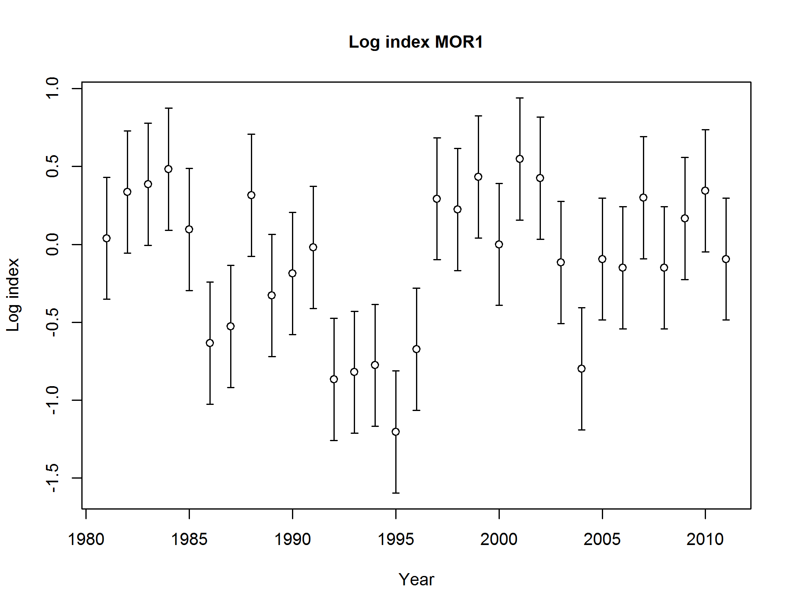
Log index data for MOR1. Lines indicate 95% uncertainty interval around index values. Thicker lines (if present) indicate input uncertainty before addition of estimated additional uncertainty parameter.
file: index4_logcpuedata_MOR1.png

Fit to log index data on log scale for MOR1. Lines indicate 95% uncertainty interval around index values. Thicker lines (if present) indicate input uncertainty before addition of estimated additional uncertainty parameter.
file: index5_logcpuefit_MOR1.png

log(observed) vs. log(expected) index values with smoother for MOR1
file: index6_logcpuecheck_MOR1.png
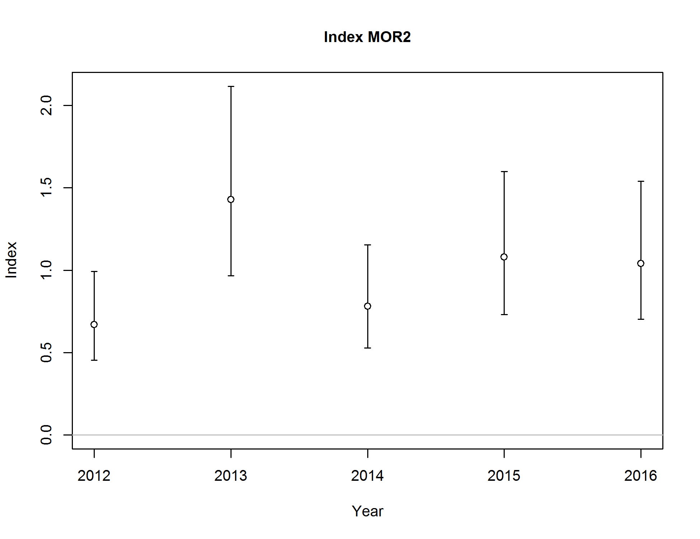
Index data for MOR2. Lines indicate 95% uncertainty interval around index values. Thicker lines (if present) indicate input uncertainty before addition of estimated additional uncertainty parameter.
file: index1_cpuedata_MOR2.png

Fit to index data for MOR2. Lines indicate 95% uncertainty interval around index values. Thicker lines (if present) indicate input uncertainty before addition of estimated additional uncertainty parameter.
file: index2_cpuefit_MOR2.png

Observed vs. expected index values with smoother for MOR2
file: index3_cpuecheck_MOR2.png
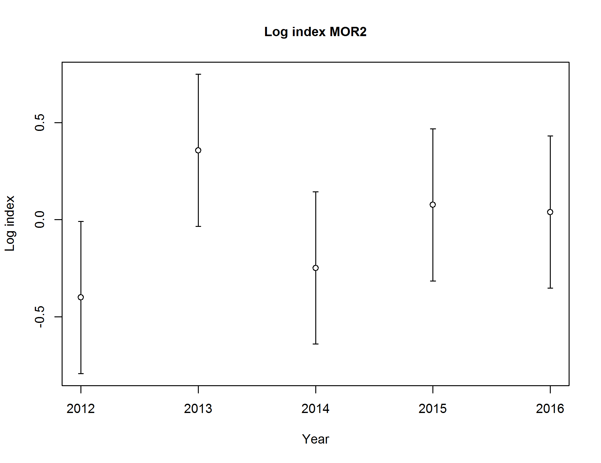
Log index data for MOR2. Lines indicate 95% uncertainty interval around index values. Thicker lines (if present) indicate input uncertainty before addition of estimated additional uncertainty parameter.
file: index4_logcpuedata_MOR2.png

Fit to log index data on log scale for MOR2. Lines indicate 95% uncertainty interval around index values. Thicker lines (if present) indicate input uncertainty before addition of estimated additional uncertainty parameter.
file: index5_logcpuefit_MOR2.png
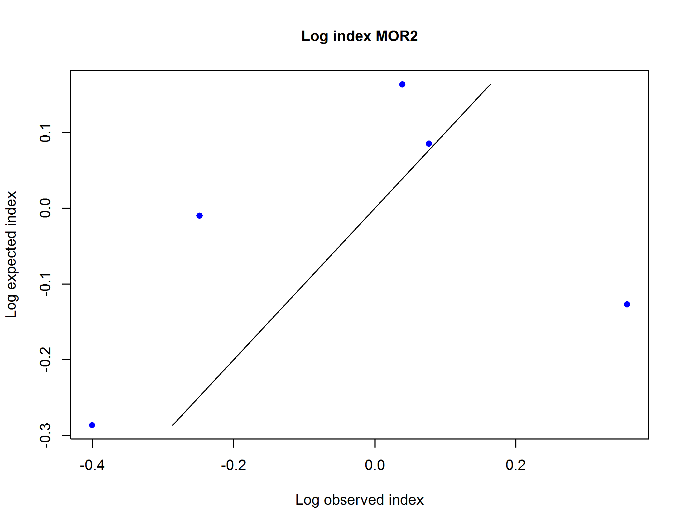
log(observed) vs. log(expected) index values with smoother for MOR2
file: index6_logcpuecheck_MOR2.png
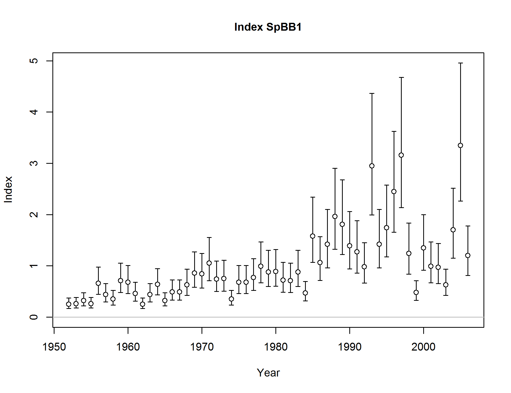
Index data for SpBB1. Lines indicate 95% uncertainty interval around index values. Thicker lines (if present) indicate input uncertainty before addition of estimated additional uncertainty parameter.
file: index1_cpuedata_SpBB1.png

Fit to index data for SpBB1. Lines indicate 95% uncertainty interval around index values. Thicker lines (if present) indicate input uncertainty before addition of estimated additional uncertainty parameter.
file: index2_cpuefit_SpBB1.png
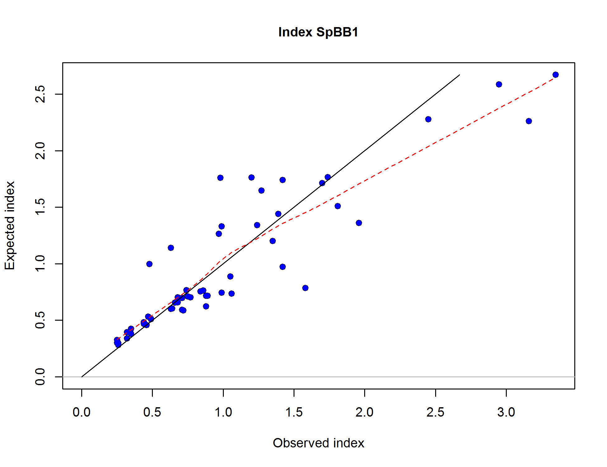
Observed vs. expected index values with smoother for SpBB1
file: index3_cpuecheck_SpBB1.png

Log index data for SpBB1. Lines indicate 95% uncertainty interval around index values. Thicker lines (if present) indicate input uncertainty before addition of estimated additional uncertainty parameter.
file: index4_logcpuedata_SpBB1.png

Fit to log index data on log scale for SpBB1. Lines indicate 95% uncertainty interval around index values. Thicker lines (if present) indicate input uncertainty before addition of estimated additional uncertainty parameter.
file: index5_logcpuefit_SpBB1.png

log(observed) vs. log(expected) index values with smoother for SpBB1
file: index6_logcpuecheck_SpBB1.png
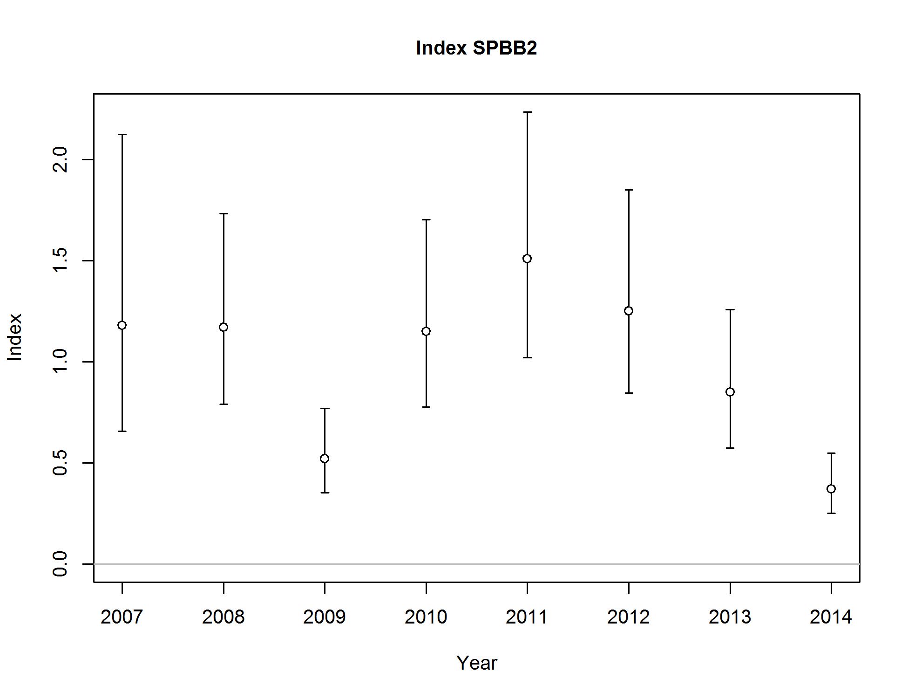
Index data for SPBB2. Lines indicate 95% uncertainty interval around index values. Thicker lines (if present) indicate input uncertainty before addition of estimated additional uncertainty parameter.
file: index1_cpuedata_SPBB2.png
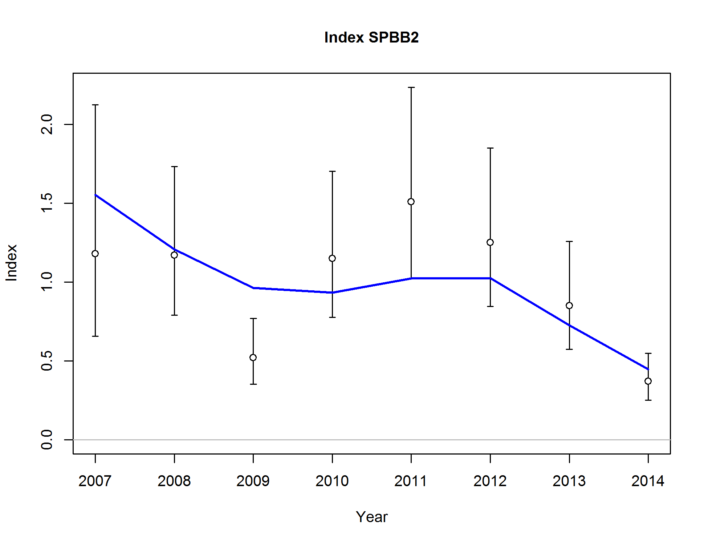
Fit to index data for SPBB2. Lines indicate 95% uncertainty interval around index values. Thicker lines (if present) indicate input uncertainty before addition of estimated additional uncertainty parameter.
file: index2_cpuefit_SPBB2.png
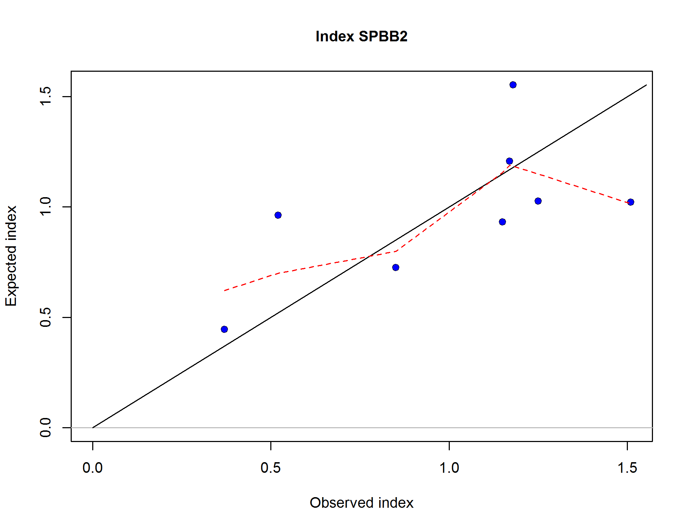
Observed vs. expected index values with smoother for SPBB2
file: index3_cpuecheck_SPBB2.png

Log index data for SPBB2. Lines indicate 95% uncertainty interval around index values. Thicker lines (if present) indicate input uncertainty before addition of estimated additional uncertainty parameter.
file: index4_logcpuedata_SPBB2.png
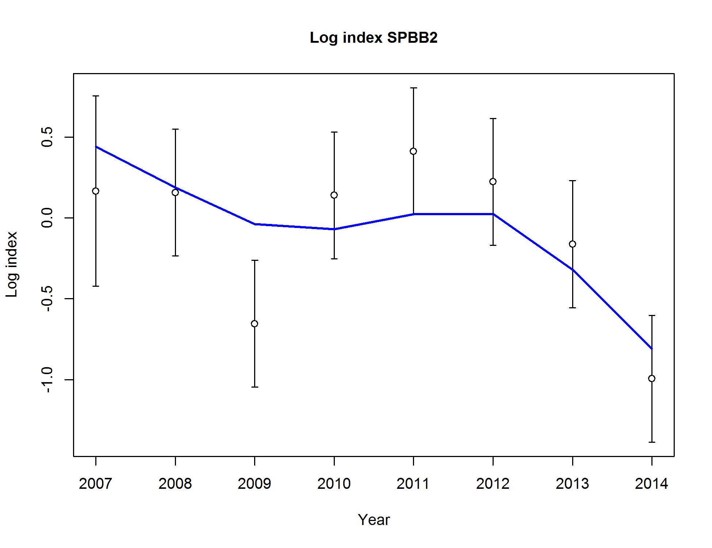
Fit to log index data on log scale for SPBB2. Lines indicate 95% uncertainty interval around index values. Thicker lines (if present) indicate input uncertainty before addition of estimated additional uncertainty parameter.
file: index5_logcpuefit_SPBB2.png

log(observed) vs. log(expected) index values with smoother for SPBB2
file: index6_logcpuecheck_SPBB2.png

Index data for JPLL_EM. Lines indicate 95% uncertainty interval around index values. Thicker lines (if present) indicate input uncertainty before addition of estimated additional uncertainty parameter.
file: index1_cpuedata_JPLL_EM.png

Fit to index data for JPLL_EM. Lines indicate 95% uncertainty interval around index values. Thicker lines (if present) indicate input uncertainty before addition of estimated additional uncertainty parameter.
file: index2_cpuefit_JPLL_EM.png

Observed vs. expected index values with smoother for JPLL_EM
file: index3_cpuecheck_JPLL_EM.png

Log index data for JPLL_EM. Lines indicate 95% uncertainty interval around index values. Thicker lines (if present) indicate input uncertainty before addition of estimated additional uncertainty parameter.
file: index4_logcpuedata_JPLL_EM.png
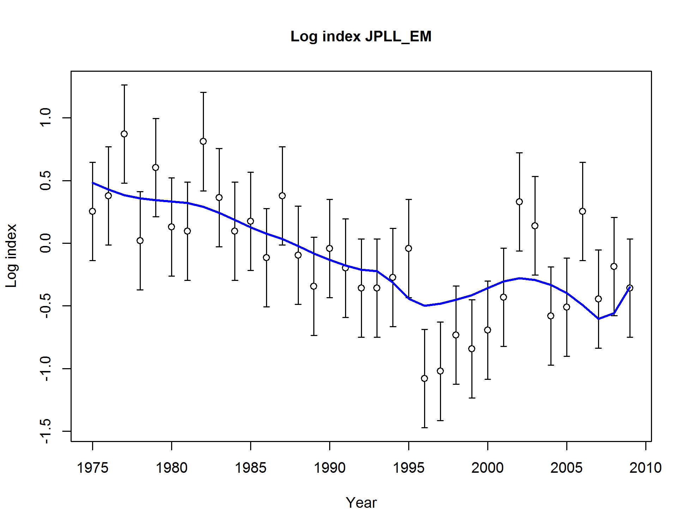
Fit to log index data on log scale for JPLL_EM. Lines indicate 95% uncertainty interval around index values. Thicker lines (if present) indicate input uncertainty before addition of estimated additional uncertainty parameter.
file: index5_logcpuefit_JPLL_EM.png
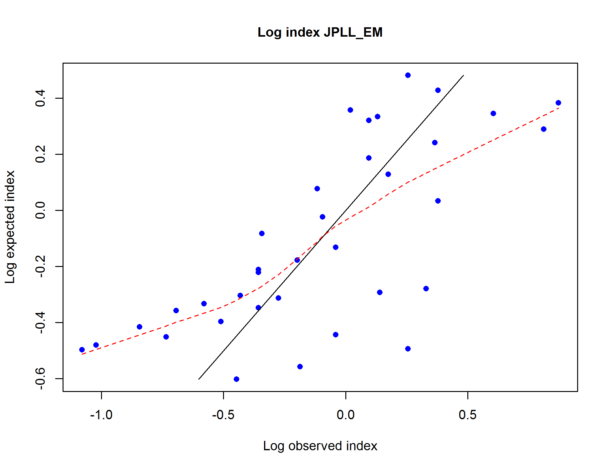
log(observed) vs. log(expected) index values with smoother for JPLL_EM
file: index6_logcpuecheck_JPLL_EM.png

Index data for JPLL_NEA. Lines indicate 95% uncertainty interval around index values. Thicker lines (if present) indicate input uncertainty before addition of estimated additional uncertainty parameter.
file: index1_cpuedata_JPLL_NEA.png

Fit to index data for JPLL_NEA. Lines indicate 95% uncertainty interval around index values. Thicker lines (if present) indicate input uncertainty before addition of estimated additional uncertainty parameter.
file: index2_cpuefit_JPLL_NEA.png

Observed vs. expected index values with smoother for JPLL_NEA
file: index3_cpuecheck_JPLL_NEA.png
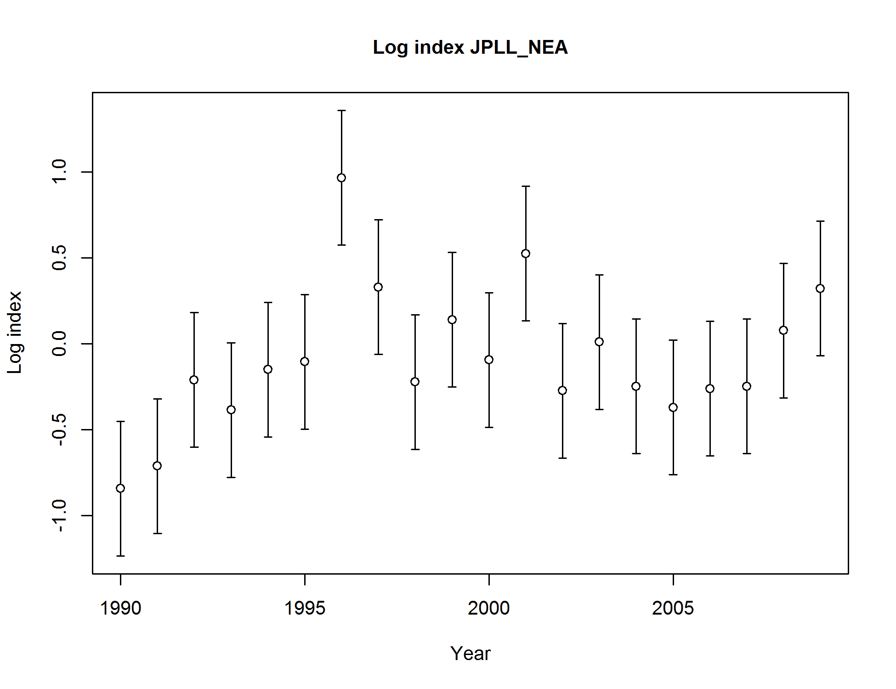
Log index data for JPLL_NEA. Lines indicate 95% uncertainty interval around index values. Thicker lines (if present) indicate input uncertainty before addition of estimated additional uncertainty parameter.
file: index4_logcpuedata_JPLL_NEA.png

Fit to log index data on log scale for JPLL_NEA. Lines indicate 95% uncertainty interval around index values. Thicker lines (if present) indicate input uncertainty before addition of estimated additional uncertainty parameter.
file: index5_logcpuefit_JPLL_NEA.png

log(observed) vs. log(expected) index values with smoother for JPLL_NEA
file: index6_logcpuecheck_JPLL_NEA.png

Index data for LJPLL_NEA2. Lines indicate 95% uncertainty interval around index values. Thicker lines (if present) indicate input uncertainty before addition of estimated additional uncertainty parameter.
file: index1_cpuedata_LJPLL_NEA2.png

Fit to index data for LJPLL_NEA2. Lines indicate 95% uncertainty interval around index values. Thicker lines (if present) indicate input uncertainty before addition of estimated additional uncertainty parameter.
file: index2_cpuefit_LJPLL_NEA2.png
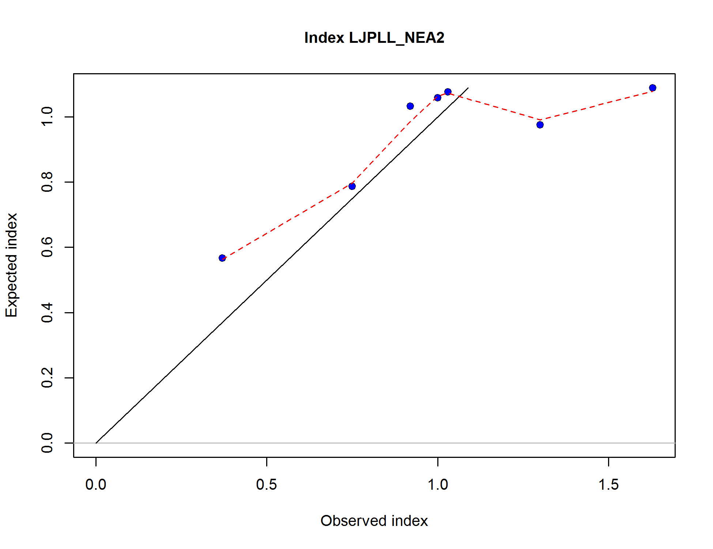
Observed vs. expected index values with smoother for LJPLL_NEA2
file: index3_cpuecheck_LJPLL_NEA2.png

Log index data for LJPLL_NEA2. Lines indicate 95% uncertainty interval around index values. Thicker lines (if present) indicate input uncertainty before addition of estimated additional uncertainty parameter.
file: index4_logcpuedata_LJPLL_NEA2.png

Fit to log index data on log scale for LJPLL_NEA2. Lines indicate 95% uncertainty interval around index values. Thicker lines (if present) indicate input uncertainty before addition of estimated additional uncertainty parameter.
file: index5_logcpuefit_LJPLL_NEA2.png
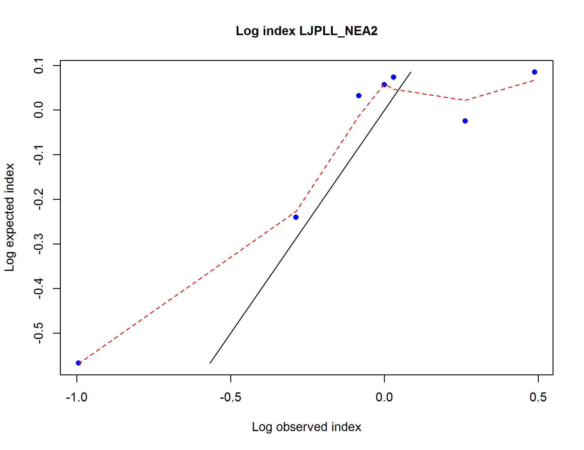
log(observed) vs. log(expected) index values with smoother for LJPLL_NEA2
file: index6_logcpuecheck_LJPLL_NEA2.png

Index data for LS. Lines indicate 95% uncertainty interval around index values. Thicker lines (if present) indicate input uncertainty before addition of estimated additional uncertainty parameter.
file: index1_cpuedata_LS.png
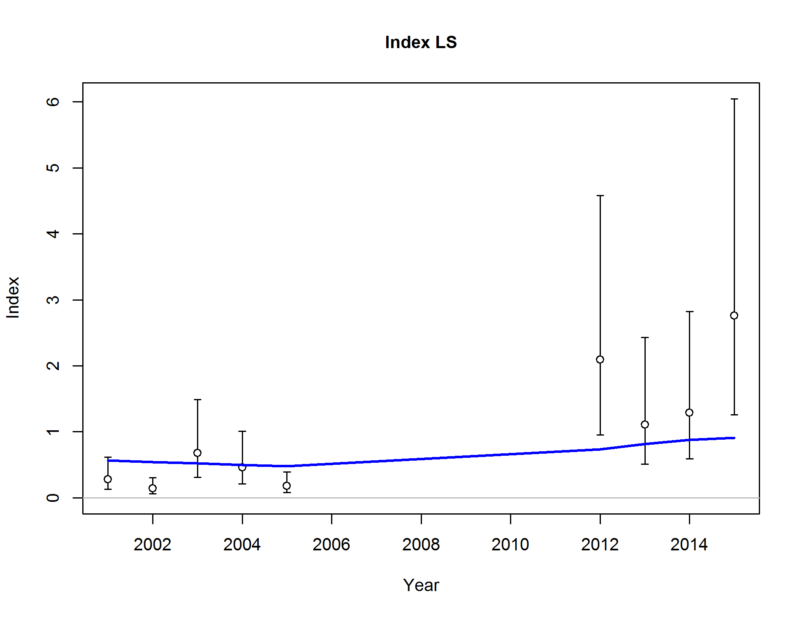
Fit to index data for LS. Lines indicate 95% uncertainty interval around index values. Thicker lines (if present) indicate input uncertainty before addition of estimated additional uncertainty parameter.
file: index2_cpuefit_LS.png

Observed vs. expected index values with smoother for LS
file: index3_cpuecheck_LS.png
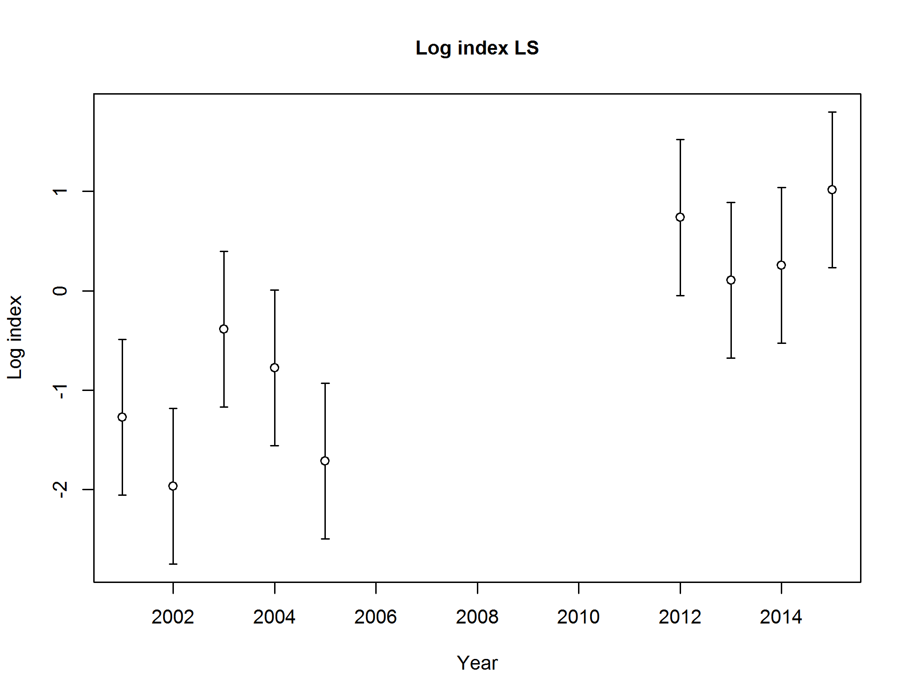
Log index data for LS. Lines indicate 95% uncertainty interval around index values. Thicker lines (if present) indicate input uncertainty before addition of estimated additional uncertainty parameter.
file: index4_logcpuedata_LS.png

Fit to log index data on log scale for LS. Lines indicate 95% uncertainty interval around index values. Thicker lines (if present) indicate input uncertainty before addition of estimated additional uncertainty parameter.
file: index5_logcpuefit_LS.png

log(observed) vs. log(expected) index values with smoother for LS
file: index6_logcpuecheck_LS.png
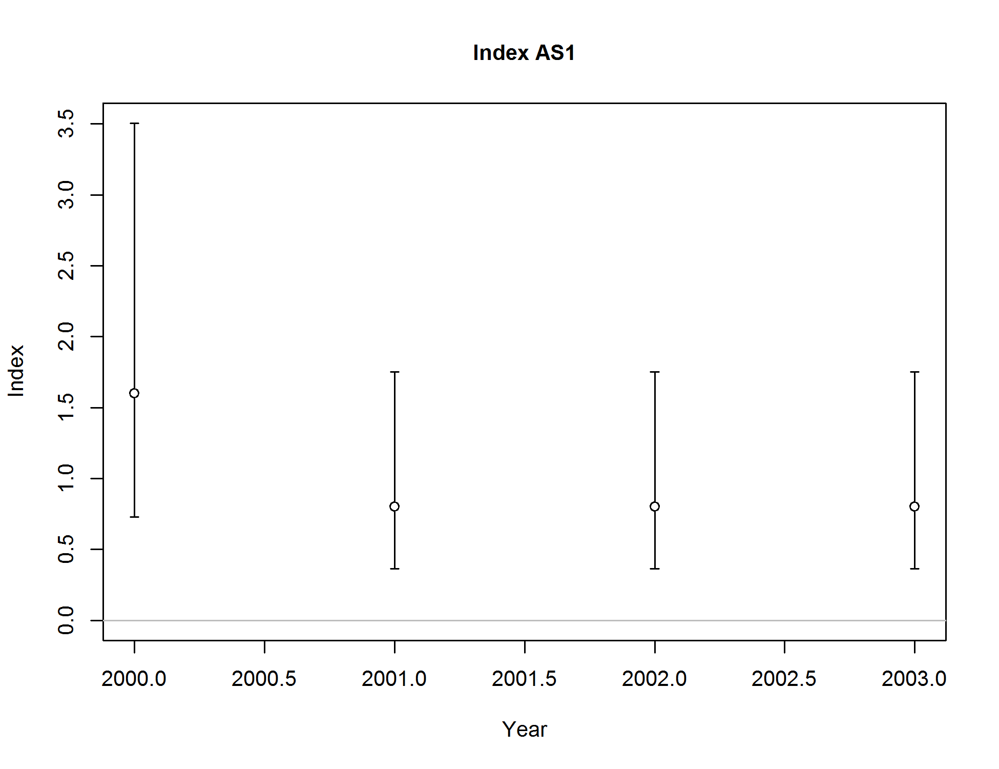
Index data for AS1. Lines indicate 95% uncertainty interval around index values. Thicker lines (if present) indicate input uncertainty before addition of estimated additional uncertainty parameter.
file: index1_cpuedata_AS1.png

Fit to index data for AS1. Lines indicate 95% uncertainty interval around index values. Thicker lines (if present) indicate input uncertainty before addition of estimated additional uncertainty parameter.
file: index2_cpuefit_AS1.png
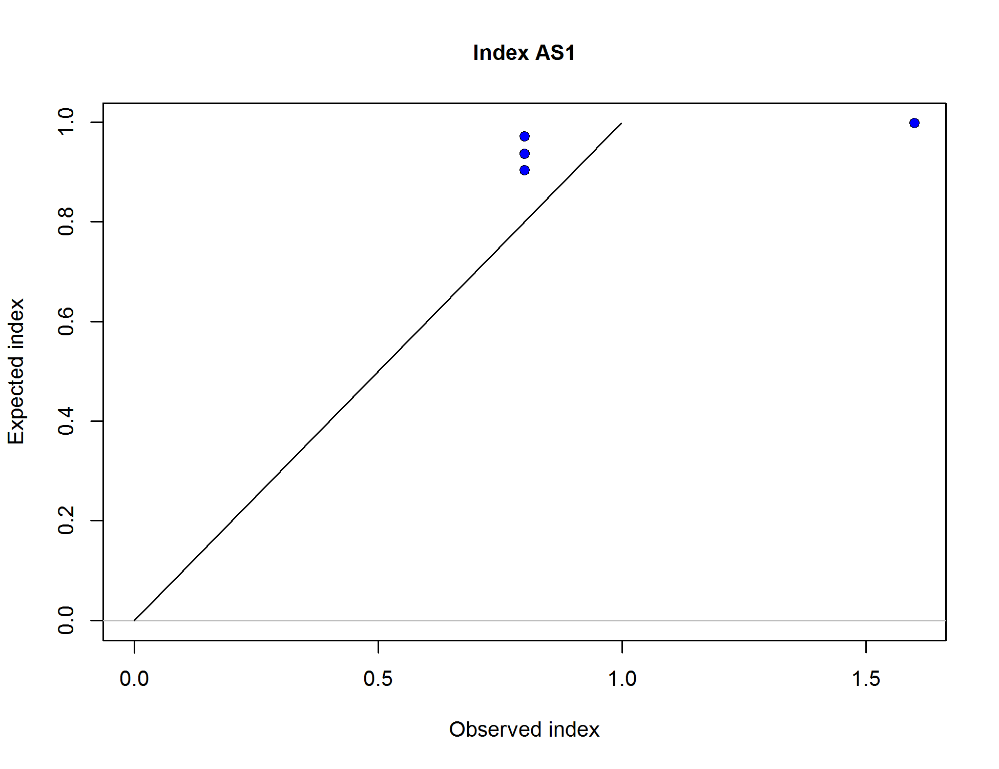
Observed vs. expected index values with smoother for AS1
file: index3_cpuecheck_AS1.png

Log index data for AS1. Lines indicate 95% uncertainty interval around index values. Thicker lines (if present) indicate input uncertainty before addition of estimated additional uncertainty parameter.
file: index4_logcpuedata_AS1.png
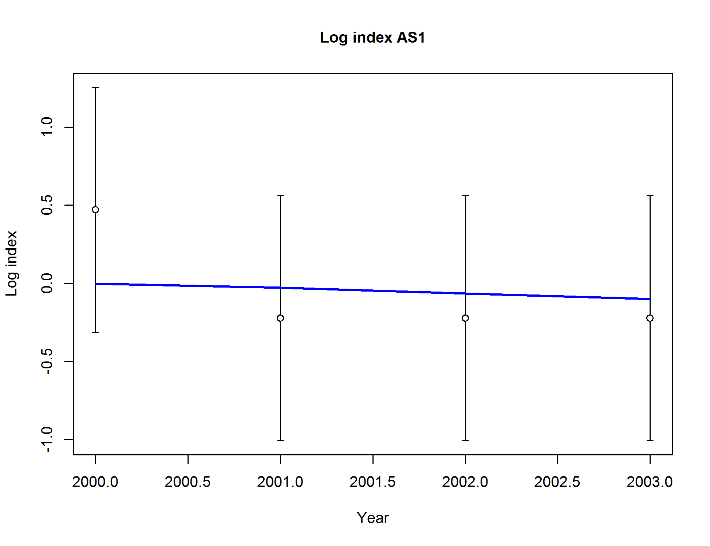
Fit to log index data on log scale for AS1. Lines indicate 95% uncertainty interval around index values. Thicker lines (if present) indicate input uncertainty before addition of estimated additional uncertainty parameter.
file: index5_logcpuefit_AS1.png
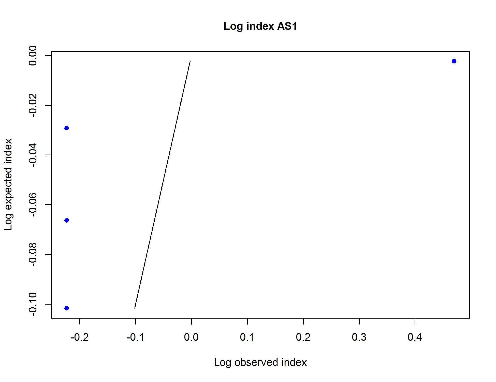
log(observed) vs. log(expected) index values with smoother for AS1
file: index6_logcpuecheck_AS1.png

Index data for AS2. Lines indicate 95% uncertainty interval around index values. Thicker lines (if present) indicate input uncertainty before addition of estimated additional uncertainty parameter.
file: index1_cpuedata_AS2.png

Fit to index data for AS2. Lines indicate 95% uncertainty interval around index values. Thicker lines (if present) indicate input uncertainty before addition of estimated additional uncertainty parameter.
file: index2_cpuefit_AS2.png
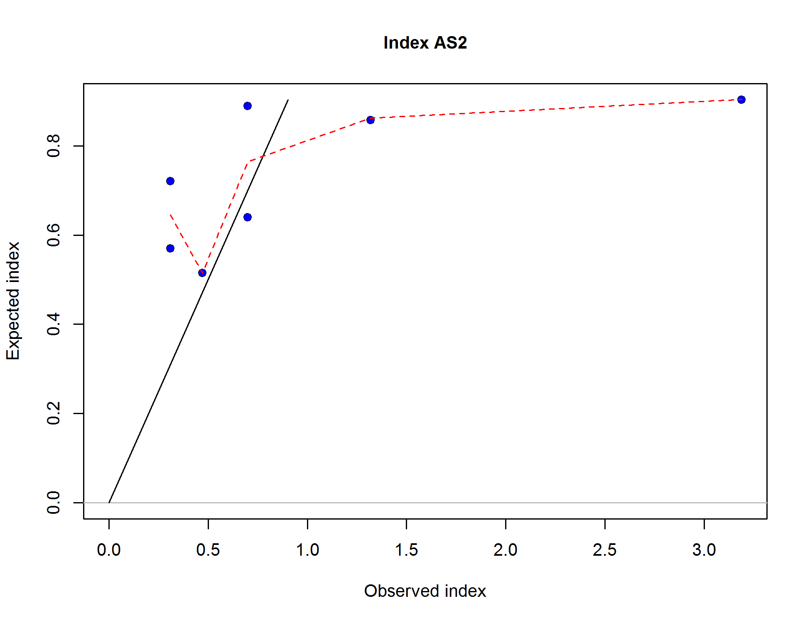
Observed vs. expected index values with smoother for AS2
file: index3_cpuecheck_AS2.png

Log index data for AS2. Lines indicate 95% uncertainty interval around index values. Thicker lines (if present) indicate input uncertainty before addition of estimated additional uncertainty parameter.
file: index4_logcpuedata_AS2.png
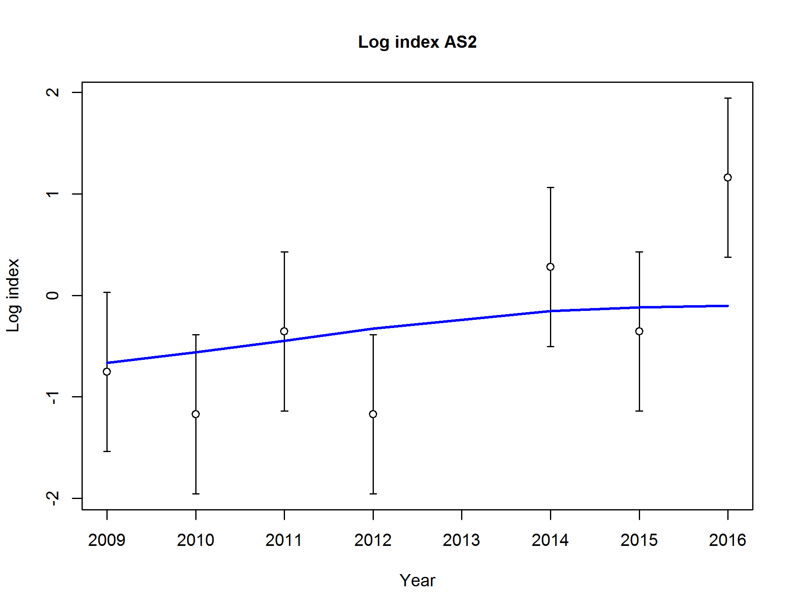
Fit to log index data on log scale for AS2. Lines indicate 95% uncertainty interval around index values. Thicker lines (if present) indicate input uncertainty before addition of estimated additional uncertainty parameter.
file: index5_logcpuefit_AS2.png
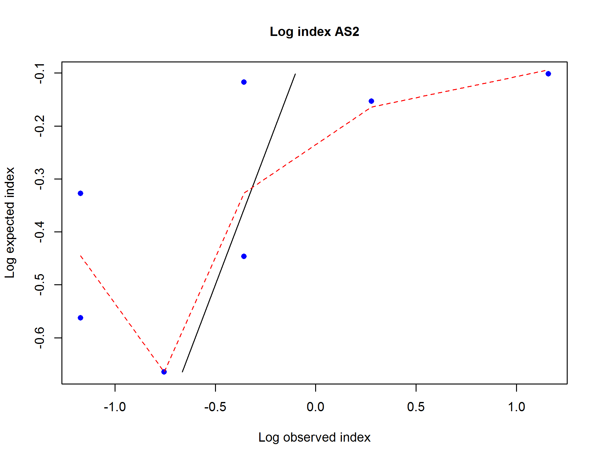
log(observed) vs. log(expected) index values with smoother for AS2
file: index6_logcpuecheck_AS2.png
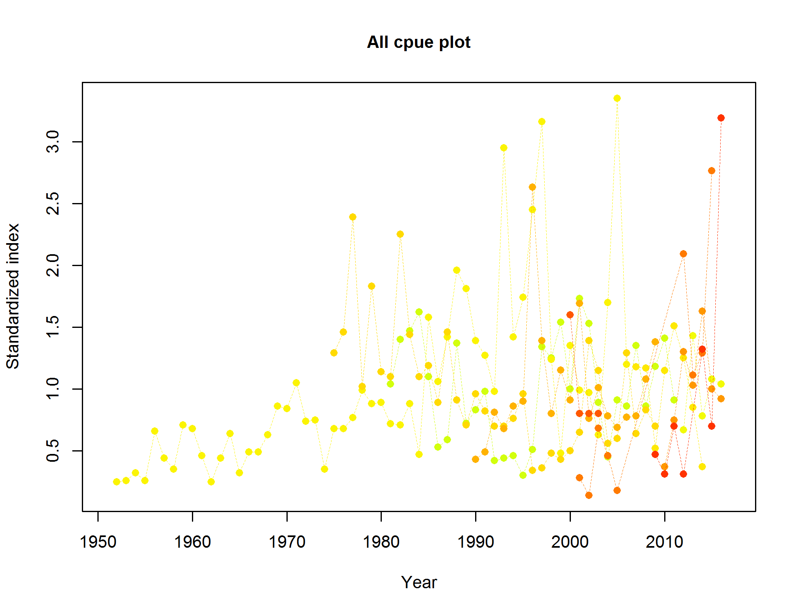
Standardized indices overlaid
file: index9_standcpueall.png
{kind=link}
{kind=link}
{kind=link}
{kind=link}
{kind=link}
{kind=link}
{kind=link}
{kind=link}
{kind=link}
{kind=link}
{kind=link}
{kind=link}
{kind=link}
{kind=link}
{kind=link}
{kind=link}
{kind=link}
{kind=link}
{kind=link}
{kind=link}
{kind=link}
{kind=link}
{kind=link}
{kind=link}
{kind=link}
{kind=link}